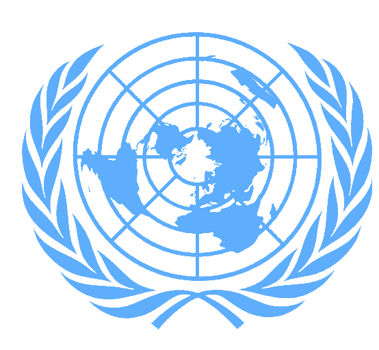

🇬🇦
🇬🇦
🇬🇦

Naciones
Unidas

Fundación de Gabon
Fue fundada en 1843 como punto de intercambio. Esclavos liberados de los Estados Unidos se radicaron en esta ciudad en 1848 bautizando el sitio como Libreville (Ciudad libre en francés). Fue el puerto principal de la colonias francesas de África Ecuatorial Francesa entre 1934 y 1946.
Donde se ubica
Gabón está situado en la costa atlántica de África central, a la altura del ecuador. Limita con Guinea Ecuatorial al noroeste, Camerún al norte, la Re- pública del Congo al este y al sur, y el Golfo de Guinea al oeste.
Consejo Económico y Social
Tópico A:
Aumento de la inflación global y de cada nación por la pandemia y agravada por él conflicto bélico Rusia-Ucrania.
Subtopico A: Endeudamiento de países subdesarrollados (Latinoamérica) y su situación con los organismos internacionales de financiamiento.
subtopico B: Crisis energética en Europa
Topico B:
Conflicto socio-económicos en Medio Oriente.
Subtopico A: Condiciones laborales y calidad de vida de los habitantes en la región ortiental y latinoamericana.
Subtopico B: Consecuencias del Brexit en toda la Unión Europea.
Consejo de Derechos Humanos
Tópico A: Discursos de odio.
Subtopico A: Creciente ultraderecha en Europa.
Movimientos neonazis de, supremacía blanca, racismo, etc.
Subtopico B: Motivos étnicos del conflicto Ruso-Ucraniano y él ingreso de la Ucrania de la OTAN
Tópico B: Conflictos separatistas alrededor del globo.
Subtopico A: Tíbet, Xinjiang, Baluchistan, Crimea, etc.
Consejo de Seguridad
Tópico A
Situación en él Mar Meridional de Asia
Tópico B
Situación Israel-Palestina
Tópico C
Situación de Yemen
Tópico D
Situación Rusa-Ucrania
Asamblea General
Tópico A
Energías renovables
Subtopico A: Tecnologías nucleares y consecuencias medioambientales.
Subtopico B: Creciente dependencia de energías no renovables y distribución de las mismas. Crisis energética en Europa.
Tópico B
Utilización de campos de concentración por parte de gobiernos y grupos armados.
Subtopico A: Situación especifica de Uigures.
Subtopico B: Campos de trabajo forzosos situados en Corea del Norte.